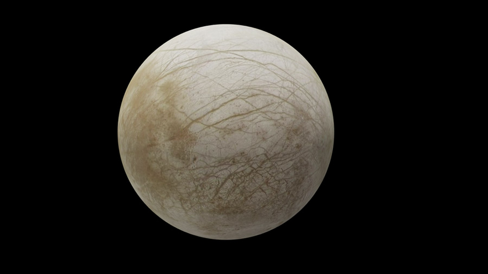

Europa
| Dati Principali | |
|---|---|
| Pianeta madre | Giove |
| Diametro | 3.122 km |
| Massa | 4,80 × 10²² kg |
| Distanza da Giove | 670.900 km |
| Periodo orbitale | 3,55 giorni |
| Superficie | Ghiaccio d’acqua, creste e fratture |
| Atmosfera | Tenue, composta da ossigeno molecolare |


Struttura di Europa
Europa ha un nucleo metallico, un mantello roccioso e un'enorme crosta ghiacciata che copre un oceano sotterraneo.
La superficie è liscia e segnata da crepe, con poche montagne e pochissimi crateri da impatto, il che suggerisce un'attività geologica recente.
Curiosità su Europa
- 🌊 Si pensa che al di sotto della superficie ci sia un oceano salato due volte più grande di tutti quelli terrestri messi insieme.
- 🧬 È uno dei luoghi più promettenti per la ricerca della vita extraterrestre nel Sistema Solare.
- 🔠Fu scoperta da Galileo Galilei nel 1610.
- 🚀 La missione Europa Clipper della NASA verrà lanciata per esplorare questo satellite negli anni 2020.